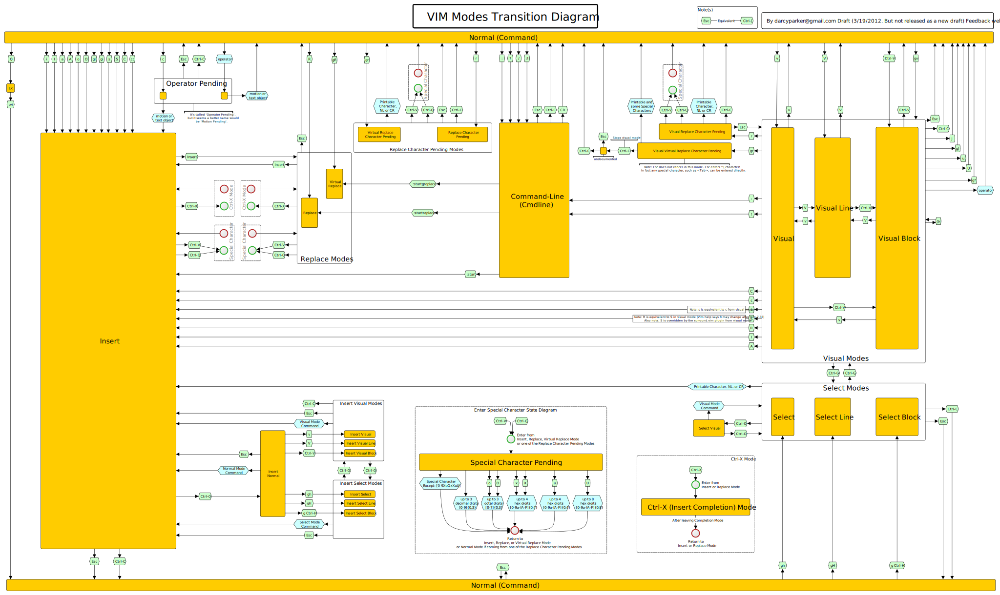

The VI Mindset
Why even bother?
So you can edit text:
- more quickly,
- more efficiently,
- and more precisely.
- But most importantly, so you can more easily achieve flow
vi basic survival guide
starting vi
$ vi [filename] [...]
using vi

quitting vi
<esc>:q!<enter>

Let's break it down
<esc> — escape insert mode and go to normal mode
: — go to command line mode
q — quit command
! — modifier on quit to ignore changes
<enter> —
fundamental metaphor of vi
vi's model is composed of modes, motions and operators
modes
In vi, you're always in a mode and you have different tools available to you depending on your mode


motions
Motions are how you get around the screen, in a separate mode from inserting text
operators
Operators are things you use to insert and modify text
composing motions with operators

With these powers combined, you can do some amazing things
training wheels
in ~/.vimrc
:noremap <right> <nop>
:noremap <left> <nop>
:noremap <up> <nop>
:noremap <down> <nop>
:inoremap <right> <nop>
:inoremap <left> <nop>
:inoremap <up> <nop>
:inoremap <down> <nop>